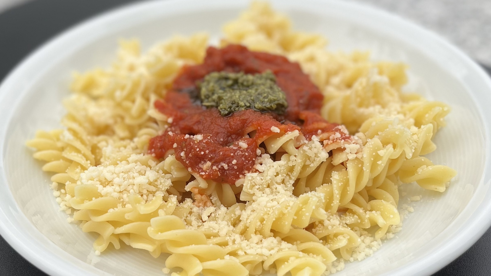

Ingredients for 5 Persons:
- 1000g of Pasta
- 2 Tins or 500g of chopped tomatos
- 1⁄2 Onion
- 5 Gloves of Garlic
- 11⁄2 tsp. Sugar
Preparation:
- Bring water to a boil and add the Pasta
- Chop the onion and cook in a deep pot until golden brown
- Finely chop the garlic and add it to the pot
- Add 2 Tins or 500g of chopped tomatos and let cook
- Add sugar to taste
- Plate and garnish with an optional sprig of rosmary